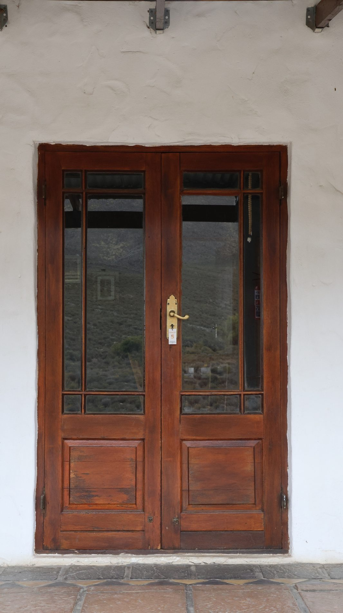
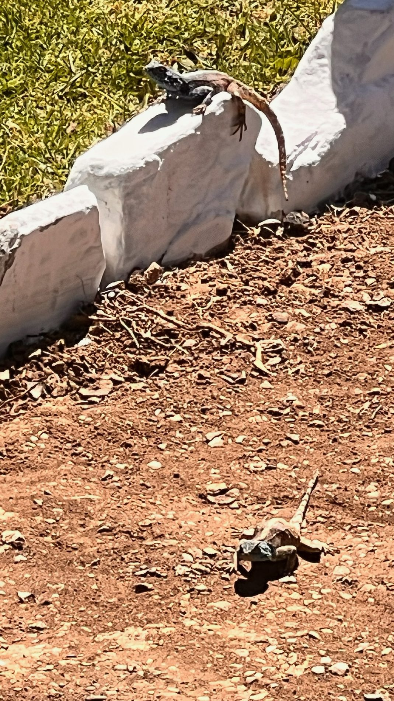
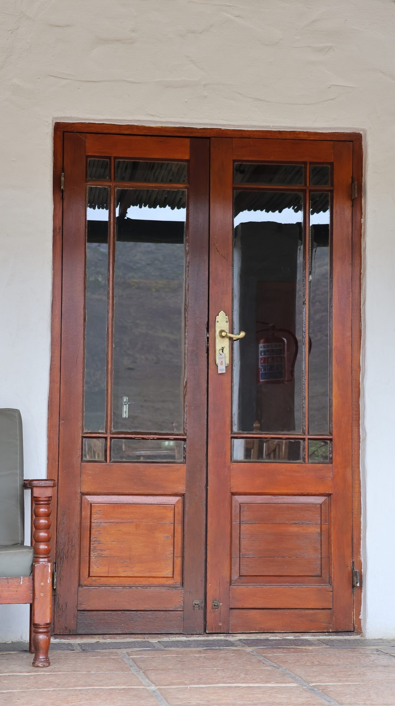
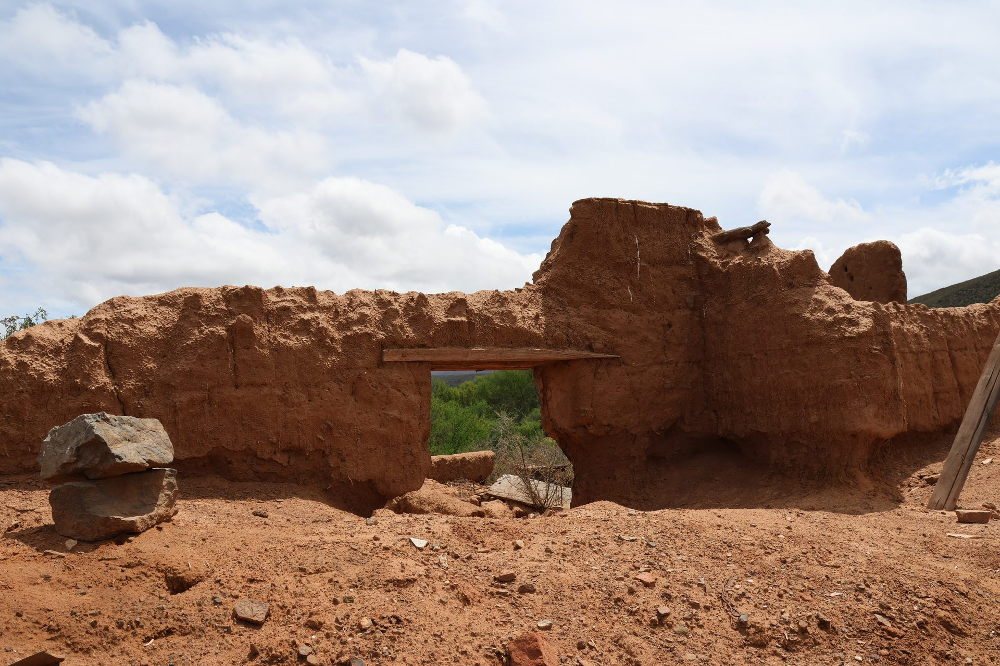
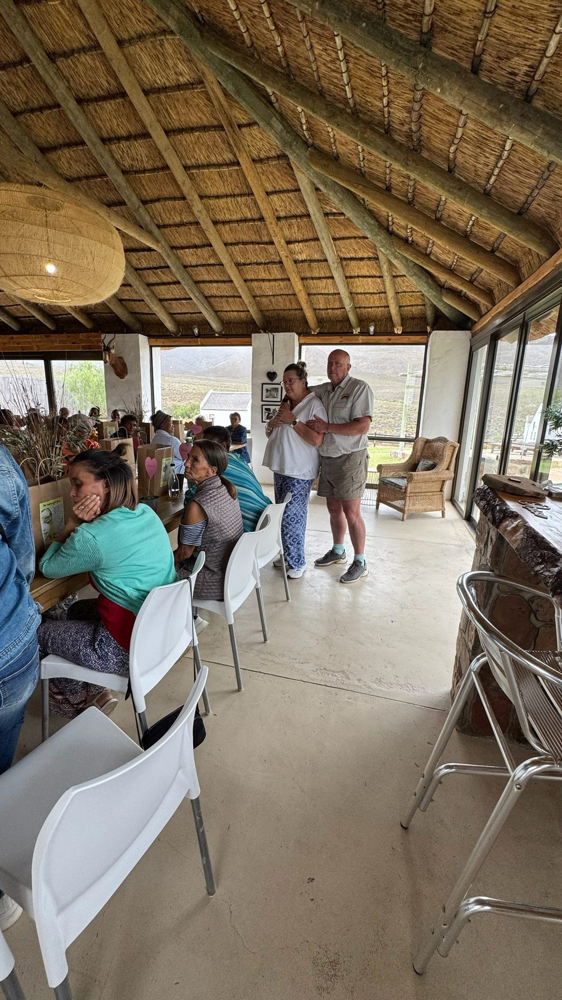
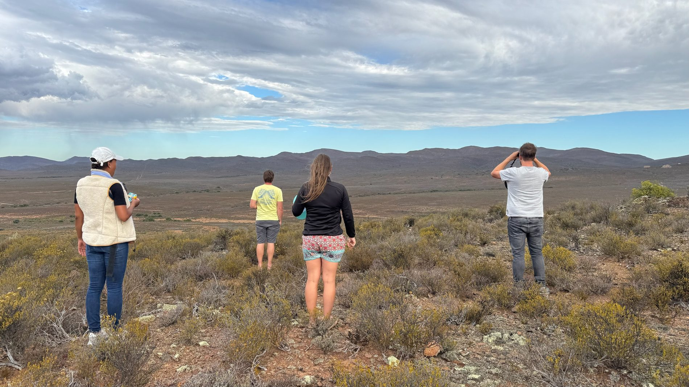

A private nature reserve of vast landscapes, wildlife encounters and soulful stillness — just outside Montagu.

Discover the perfect blend of African wilderness and Little Karoo charm at our secluded, off-the-grid lodge. Just 2.5 hours from Cape Town, your journey north along Route 62 culminates in the award-winning town of Montagu and a wilderness escape worth the drive.
Completely off the grid and powered by solar energy, the lodge brings you closer to nature without giving up comfort.
Read More
Morning and sunset drives through the reserve, with wildlife, mountain views and refreshments.
Explore
Secluded wilderness tents for a romantic, low-key nature break surrounded by silence.
Explore

Karoo sunsets, mountain backdrops and a secluded venue for unforgettable celebrations.
Explore